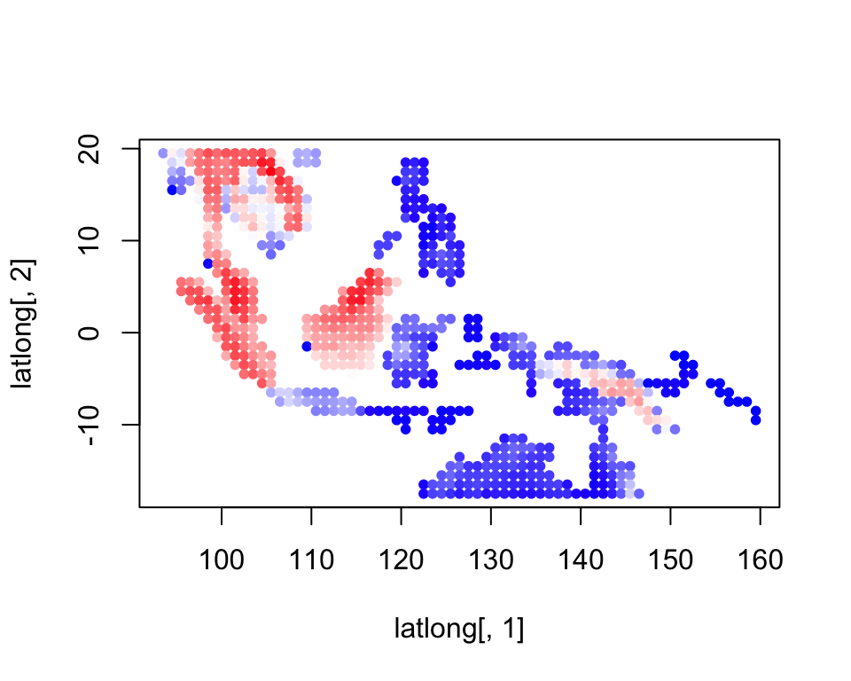
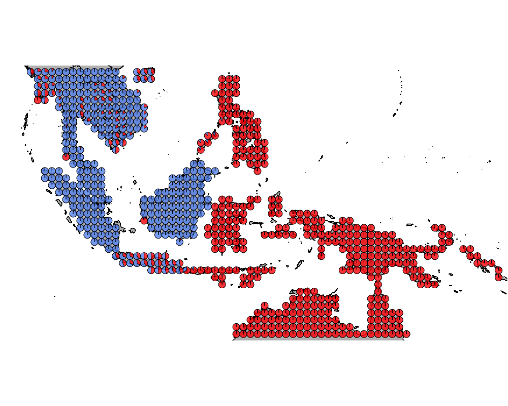
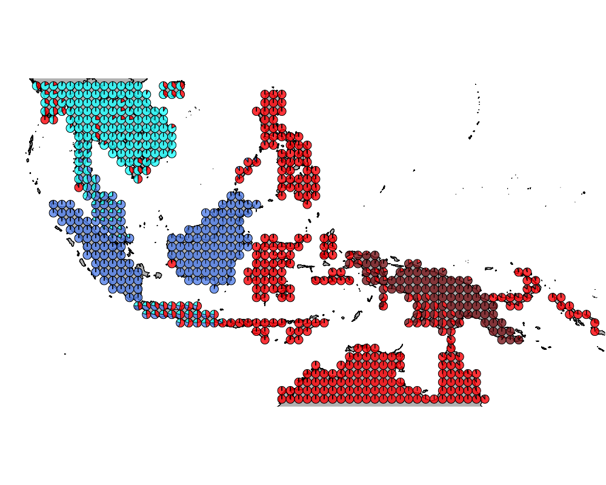
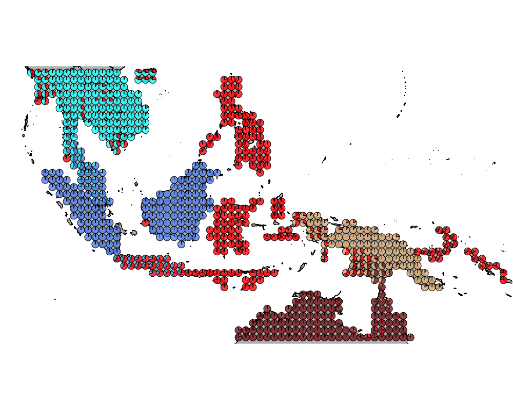
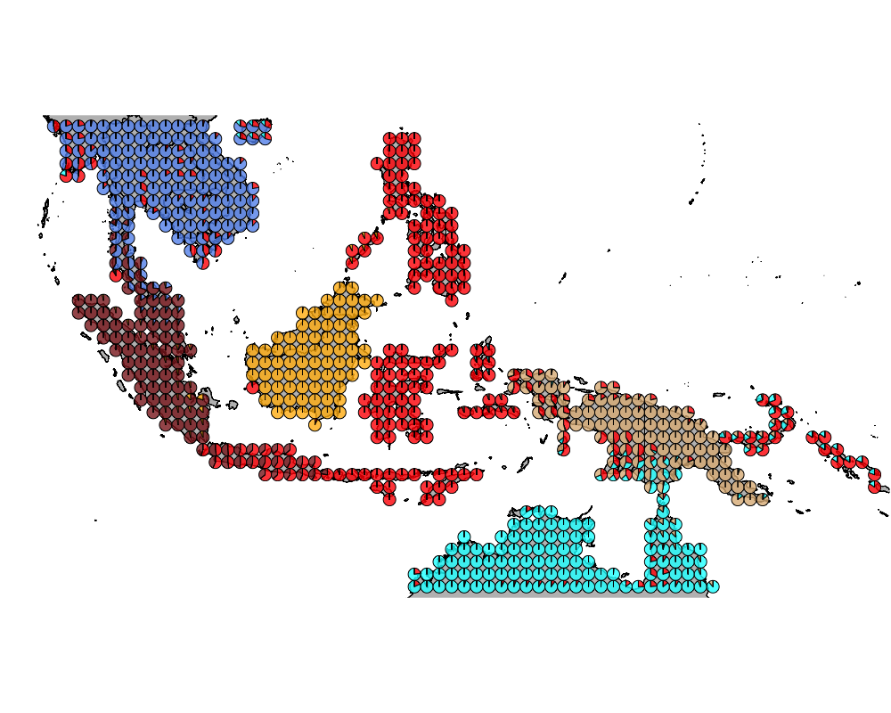
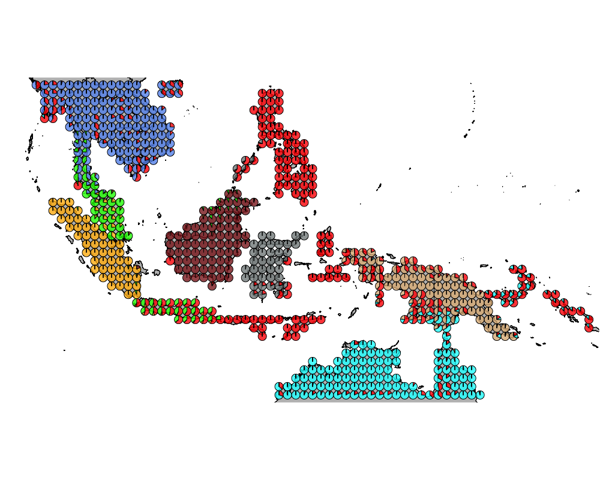
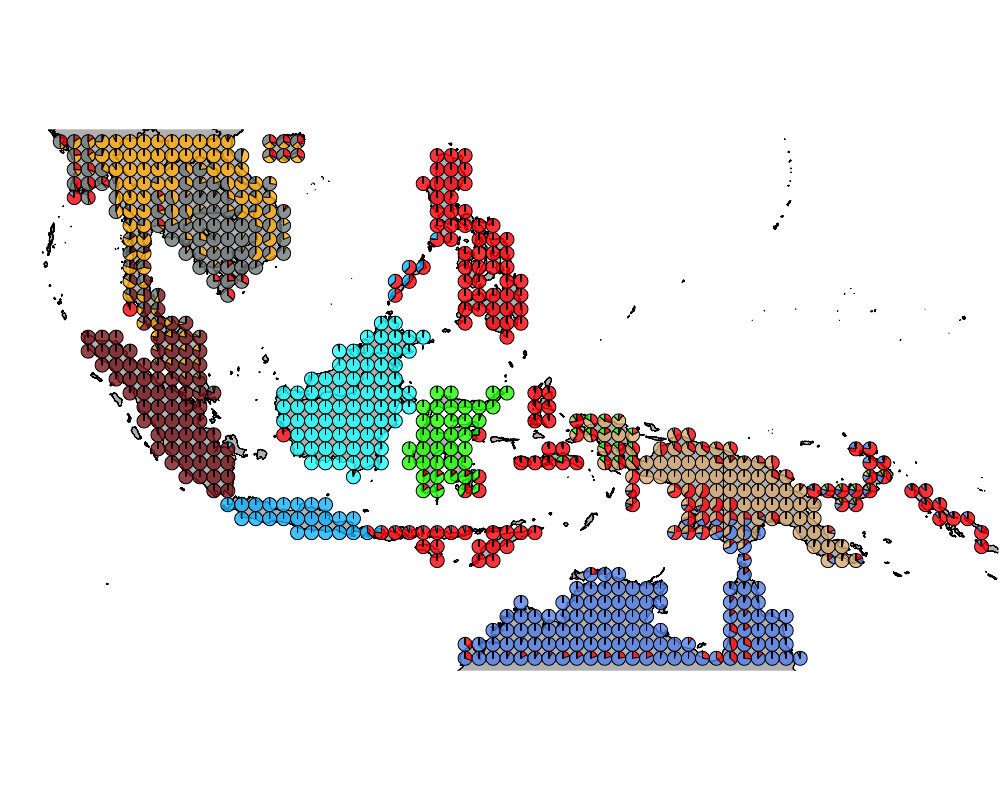
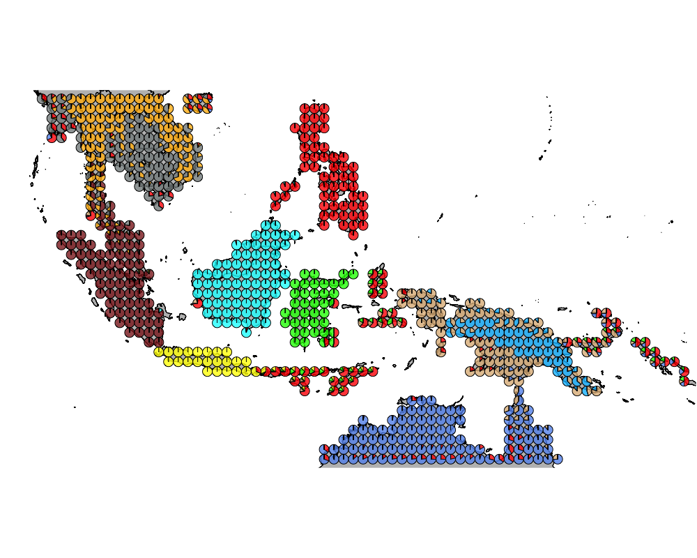

Wallacea region GoM analysis : mammals without bats
Kushal K Dey
6/5/2018
Intro
Here we observe the presence absence data of mammals species (without bats) in the Australasian region (Wallacea). We try to interpret that in the context of our Grade of Membership (GoM) model and its applications to presence absence data.
Packages
library(methClust)
library(CountClust)
library(rasterVis)
library(gtools)
library(sp)
library(rgdal)
library(ggplot2)
library(maps)
library(mapdata)
library(mapplots)
library(scales)
library(ggthemes)Load the data
Wallacea Region data
mamms <- get(load("../data/mammals_without_bats.rda"))
latlong_chars <- rownames(mamms)
latlong <- cbind.data.frame(as.numeric(sapply(latlong_chars,
function(x) return(strsplit(x, "_")[[1]][1]))),
as.numeric(sapply(latlong_chars,
function(x) return(strsplit(x, "_")[[1]][2]))))Map of Wallacea
world_map <- map_data("world")
world_map <- world_map[world_map$region != "Antarctica",] # intercourse antarctica
world_map <- world_map[world_map$long > 90 & world_map$long < 160, ]
world_map <- world_map[world_map$lat > -18 & world_map$lat < 20, ]
p <- ggplot() + coord_fixed() +
xlab("") + ylab("")
#Add map to base plot
base_world_messy <- p + geom_polygon(data=world_map, aes(x=long, y=lat, group=group), colour="light green", fill="light green")
cleanup <-
theme(panel.grid.major = element_blank(), panel.grid.minor = element_blank(),
panel.background = element_rect(fill = 'white', colour = 'white'),
axis.line = element_line(colour = "white"), legend.position="none",
axis.ticks=element_blank(), axis.text.x=element_blank(),
axis.text.y=element_blank())
base_world <- base_world_messy + cleanup
base_world
mamms_data <- mammsrichness <- rowSums(mamms_data)colorGradient <- colorRampPalette(c("blue", "white", "red"))(120)
plot(latlong[,1], latlong[,2], col= colorGradient[richness], pch = 20, cex = 1)
Applying methclust presence absence Grade of Membership model to the presence absence data
topics_clust <- list()
topics_clust[[1]] <- NULL
for(k in 2:10){
topics_clust[[k]] <- meth_topics(mamms_data, 1 - mamms_data,
K=k, tol = 10, use_squarem = FALSE)
}
save(topics_clust, file = "../output/methClust_wallacea_mammals_no_bats.rda")Visualization
topics_clust <- get(load("../output/methClust_wallacea_mammals_no_bats.rda"))color = c("red", "cornflowerblue", "cyan", "brown4", "burlywood", "darkgoldenrod1",
"azure4", "green","deepskyblue","yellow", "azure1")
intensity <- 0.8
for(k in 2:10){
png(filename=paste0("../docs/Wallacea_mammals_no_bats/geostructure_birds_", k, ".png"),width = 1000, height = 800)
map("worldHires",
ylim=c(-18,20), xlim=c(90,160), # Re-defines the latitude and longitude range
col = "gray", fill=TRUE, mar=c(0.1,0.1,0.1,0.1))
lapply(1:dim(topics_clust[[k]]$omega)[1], function(r)
add.pie(z=as.integer(100*topics_clust[[k]]$omega[r,]),
x=latlong[r,1], y=latlong[r,2], labels=c("","",""),
radius = 0.5,
col=c(alpha(color[1],intensity),alpha(color[2],intensity),
alpha(color[3], intensity), alpha(color[4], intensity),
alpha(color[5], intensity), alpha(color[6], intensity),
alpha(color[7], intensity), alpha(color[8], intensity),
alpha(color[9], intensity), alpha(color[10], intensity),
alpha(color[11], intensity))));
dev.off()
}The geostructure plot for different K.
K = 2

K = 3
K = 4

K = 5

K = 6

K = 7

K = 8

K = 9

K = 10

Important Birds
We obtain the driving bird species for each cluster using the CountClust package.
K = 2
driving_species_ind <- ExtractTopFeatures(topics_clust[[2]]$freq, method = "poisson", options = "min", top_features = 50)
species_names <- apply(driving_species_ind$indices, c(1,2), function(x) return (rownames(topics_clust[[2]]$freq)[x]))
t(species_names)## [,1] [,2]
## [1,] "Petaurus.breviceps" "Arctogalidia.trivirgata"
## [2,] "Hydromys.chrysogaster" "Tragulus.kanchil"
## [3,] "Macropus.agilis" "Herpestes.urva"
## [4,] "Tachyglossus.aculeatus" "Crocidura.fuliginosa"
## [5,] "Pseudomys.delicatulus" "Paguma.larvata"
## [6,] "Macropus.antilopinus" "Martes.flavigula"
## [7,] "Planigale.maculata" "Rusa.unicolor"
## [8,] "Melomys.rufescens" "Viverra.megaspila"
## [9,] "Spilocuscus.maculatus" "Muntiacus.vaginalis"
## [10,] "Macropus.robustus" "Leopoldamys.sabanus"
## [11,] "Onychogalea.unguifera" "Galeopterus.variegatus"
## [12,] "Uromys.caudimaculatus" "Ursus.thibetanus"
## [13,] "Lagorchestes.conspicillatus" "Tupaia.belangeri"
## [14,] "Leggadina.lakedownensis" "Arctonyx.collaris"
## [15,] "Echymipera.kalubu" "Hystrix.brachyura"
## [16,] "Echymipera.rufescens" "Rattus.tanezumi"
## [17,] "Isoodon.macrourus" "Mus.caroli"
## [18,] "Dactylopsila.trivirgata" "Pardofelis.marmorata"
## [19,] "Murexia.longicaudata" "Petaurista.philippensis"
## [20,] "Rattus.tunneyi" "Rhizomys.sumatrensis"
## [21,] "Trichosurus.vulpecula" "Menetes.berdmorei"
## [22,] "Xenuromys.barbatus" "Rhizomys.pruinosus"
## [23,] "Dasyurus.albopunctatus" "Bandicota.indica"
## [24,] "Zyzomys.argurus" "Callosciurus.erythraeus"
## [25,] "Pseudochirulus.canescens" "Nycticebus.bengalensis"
## [26,] "Pseudomys.nanus" "Tragulus.napu"
## [27,] "Distoechurus.pennatus" "Macaca.leonina"
## [28,] "Murexia.melanurus" "Hemigalus.derbyanus"
## [29,] "Melomys.lutillus" "Echinosorex.gymnura"
## [30,] "Pogonomys.macrourus" "Melogale.personata"
## [31,] "Paramelomys.platyops" "Lepus.peguensis"
## [32,] "Rattus.praetor" "Hylopetes.spadiceus"
## [33,] "Rattus.leucopus" "Helarctos.malayanus"
## [34,] "Phalanger.gymnotis" "Cynogale.bennettii"
## [35,] "Melomys.burtoni" "Prionodon.linsang"
## [36,] "Conilurus.penicillatus" "Maxomys.surifer"
## [37,] "Lorentzimys.nouhuysi" "Mustela.nudipes"
## [38,] "Paramelomys.mollis" "Ratufa.affinis"
## [39,] "Rattus.villosissimus" "Sundasciurus.lowii"
## [40,] "Petrogale.brachyotis" "Maxomys.rajah"
## [41,] "Microperoryctes.longicauda" "Maxomys.whiteheadi"
## [42,] "Cercartetus.caudatus" "Sundasciurus.hippurus"
## [43,] "Parahydromys.asper" "Dremomys.rufigenis"
## [44,] "Rattus.steini" "Manis.javanica"
## [45,] "Peroryctes.raffrayana" "Bos.gaurus"
## [46,] "Sminthopsis.virginiae" "Arctictis.binturong"
## [47,] "Anisomys.imitator" "Callosciurus.prevostii"
## [48,] "Uromys.anak" "Herpestes.brachyurus"
## [49,] "Zaglossus.bartoni" "Lutrogale.perspicillata"
## [50,] "Pseudochirops.corinnae" "Tupaia.minor"K = 2
driving_species_ind <- ExtractTopFeatures(topics_clust[[3]]$freq, method = "poisson", options = "min", top_features = 50)
species_names <- apply(driving_species_ind$indices, c(1,2), function(x) return (rownames(topics_clust[[2]]$freq)[x]))
t(species_names)## [,1] [,2]
## [1,] "Petaurus.breviceps" "Tupaia.tana"
## [2,] "Hydromys.chrysogaster" "Trichys.fasciculata"
## [3,] "Macropus.agilis" "Trachypithecus.cristatus"
## [4,] "Macropus.robustus" "Herpestes.brachyurus"
## [5,] "Lagorchestes.conspicillatus" "Neofelis.diardi"
## [6,] "Tachyglossus.aculeatus" "Callosciurus.prevostii"
## [7,] "Onychogalea.unguifera" "Tarsius.bancanus"
## [8,] "Pseudomys.nanus" "Nannosciurus.melanotis"
## [9,] "Leggadina.lakedownensis" "Maxomys.rajah"
## [10,] "Macropus.antilopinus" "Maxomys.whiteheadi"
## [11,] "Pseudomys.delicatulus" "Sundasciurus.hippurus"
## [12,] "Rattus.praetor" "Sundasciurus.lowii"
## [13,] "Uromys.caudimaculatus" "Sundasciurus.tenuis"
## [14,] "Spilocuscus.maculatus" "Nycticebus.menagensis"
## [15,] "Myoictis.melas" "Exilisciurus.exilis"
## [16,] "Rattus.tunneyi" "Crocidura.foetida"
## [17,] "Phalanger.orientalis" "Hystrix.crassispinis"
## [18,] "Melomys.rufescens" "Muntiacus.atherodes"
## [19,] "Dactylopsila.trivirgata" "Rheithrosciurus.macrotis"
## [20,] "Echymipera.kalubu" "Chiropodomys.pusillus"
## [21,] "Echymipera.rufescens" "Sus.barbatus"
## [22,] "Rattus.villosissimus" "Callosciurus.notatus"
## [23,] "Zyzomys.argurus" "Presbytis.rubicunda"
## [24,] "Rattus.everetti" "Tupaia.gracilis"
## [25,] "Isoodon.macrourus" "Nasalis.larvatus"
## [26,] "Conilurus.penicillatus" "Herpestes.semitorquatus"
## [27,] "Planigale.maculata" "Muntiacus.muntjak"
## [28,] "Pseudomys.johnsoni" "Ratufa.affinis"
## [29,] "Trichosurus.vulpecula" "Lariscus.insignis"
## [30,] "Paramelomys.platyops" "Petinomys.genibarbis"
## [31,] "Sminthopsis.virginiae" "Hylobates.muelleri"
## [32,] "Ailurops.ursinus" "Tupaia.minor"
## [33,] "Sus.celebensis" "Tupaia.ferruginea"
## [34,] "Prosciurillus.leucomus" "Hystrix.sumatrae"
## [35,] "Rusa.marianna" "Mustela.nudipes"
## [36,] "Petrogale.brachyotis" "Tupaia.dorsalis"
## [37,] "Phalanger.gymnotis" "Rhinosciurus.laticaudatus"
## [38,] "Strigocuscus.celebensis" "Macaca.nemestrina"
## [39,] "Macropus.rufus" "Iomys.horsfieldii"
## [40,] "Phascolosorex.dorsalis" "Rattus.tiomanicus"
## [41,] "Maxomys.musschenbroekii" "Aeromys.thomasi"
## [42,] "Rubrisciurus.rubriventer" "Maxomys.tajuddinii"
## [43,] "Rattus.hoffmanni" "Presbytis.frontata"
## [44,] "Maxomys.hellwaldii" "Catopuma.badia"
## [45,] "Bunomys.chrysocomus" "Echinosorex.gymnura"
## [46,] "Paruromys.dominator" "Hemigalus.derbyanus"
## [47,] "Xenuromys.barbatus" "Cynogale.bennettii"
## [48,] "Melomys.burtoni" "Sundasciurus.brookei"
## [49,] "Dasyurus.albopunctatus" "Sundamys.muelleri"
## [50,] "Sminthopsis.macroura" "Niviventer.rapit"
## [,3]
## [1,] "Melogale.personata"
## [2,] "Lepus.peguensis"
## [3,] "Bandicota.indica"
## [4,] "Macaca.leonina"
## [5,] "Petaurista.philippensis"
## [6,] "Bandicota.savilei"
## [7,] "Rattus.tanezumi"
## [8,] "Canis.aureus"
## [9,] "Tupaia.belangeri"
## [10,] "Niviventer.langbianis"
## [11,] "Mus.pahari"
## [12,] "Vandeleuria.oleracea"
## [13,] "Callosciurus.finlaysonii"
## [14,] "Berylmys.berdmorei"
## [15,] "Ursus.thibetanus"
## [16,] "Felis.chaus"
## [17,] "Muntiacus.vaginalis"
## [18,] "Tamiops.rodolphii"
## [19,] "Mustela.strigidorsa"
## [20,] "Prionodon.pardicolor"
## [21,] "Hylopetes.alboniger"
## [22,] "Macaca.assamensis"
## [23,] "Arctonyx.collaris"
## [24,] "Cannomys.badius"
## [25,] "Chiromyscus.chiropus"
## [26,] "Trachypithecus.phayrei"
## [27,] "Menetes.berdmorei"
## [28,] "Crocidura.indochinensis"
## [29,] "Nycticebus.bengalensis"
## [30,] "Nycticebus.pygmaeus"
## [31,] "Crocidura.vorax"
## [32,] "Trachypithecus.germaini"
## [33,] "Mustela.kathiah"
## [34,] "Macaca.mulatta"
## [35,] "Viverra.megaspila"
## [36,] "Rattus.nitidus"
## [37,] "Euroscaptor.klossi"
## [38,] "Mus.cookii"
## [39,] "Hylopetes.phayrei"
## [40,] "Capricornis.milneedwardsii"
## [41,] "Mus.shortridgei"
## [42,] "Crocidura.fuliginosa"
## [43,] "Rattus.losea"
## [44,] "Rhizomys.pruinosus"
## [45,] "Callosciurus.erythraeus"
## [46,] "Herpestes.urva"
## [47,] "Rattus.andamanensis"
## [48,] "Melogale.moschata"
## [49,] "Tamiops.maritimus"
## [50,] "Niviventer.tenaster"sessionInfo()## R version 3.5.0 (2018-04-23)
## Platform: x86_64-apple-darwin15.6.0 (64-bit)
## Running under: macOS Sierra 10.12.6
##
## Matrix products: default
## BLAS: /Library/Frameworks/R.framework/Versions/3.5/Resources/lib/libRblas.0.dylib
## LAPACK: /Library/Frameworks/R.framework/Versions/3.5/Resources/lib/libRlapack.dylib
##
## locale:
## [1] en_US.UTF-8/en_US.UTF-8/en_US.UTF-8/C/en_US.UTF-8/en_US.UTF-8
##
## attached base packages:
## [1] stats graphics grDevices utils datasets methods base
##
## other attached packages:
## [1] ggthemes_3.5.0 scales_0.5.0 mapplots_1.5
## [4] mapdata_2.3.0 maps_3.3.0 rgdal_1.2-20
## [7] gtools_3.5.0 rasterVis_0.44 latticeExtra_0.6-28
## [10] RColorBrewer_1.1-2 lattice_0.20-35 raster_2.6-7
## [13] sp_1.2-7 CountClust_1.6.1 ggplot2_2.2.1
## [16] methClust_0.1.0
##
## loaded via a namespace (and not attached):
## [1] zoo_1.8-1 modeltools_0.2-21 slam_0.1-43
## [4] reshape2_1.4.3 colorspace_1.3-2 htmltools_0.3.6
## [7] stats4_3.5.0 viridisLite_0.3.0 yaml_2.1.19
## [10] mgcv_1.8-23 rlang_0.2.0 hexbin_1.27.2
## [13] pillar_1.2.2 plyr_1.8.4 stringr_1.3.1
## [16] munsell_0.4.3 gtable_0.2.0 evaluate_0.10.1
## [19] labeling_0.3 knitr_1.20 permute_0.9-4
## [22] flexmix_2.3-14 parallel_3.5.0 Rcpp_0.12.17
## [25] backports_1.1.2 limma_3.36.1 vegan_2.5-1
## [28] maptpx_1.9-5 picante_1.7 digest_0.6.15
## [31] stringi_1.2.2 cowplot_0.9.2 grid_3.5.0
## [34] rprojroot_1.3-2 tools_3.5.0 magrittr_1.5
## [37] lazyeval_0.2.1 tibble_1.4.2 cluster_2.0.7-1
## [40] ape_5.1 MASS_7.3-49 Matrix_1.2-14
## [43] SQUAREM_2017.10-1 assertthat_0.2.0 rmarkdown_1.9
## [46] boot_1.3-20 nnet_7.3-12 nlme_3.1-137
## [49] compiler_3.5.0This R Markdown site was created with workflowr